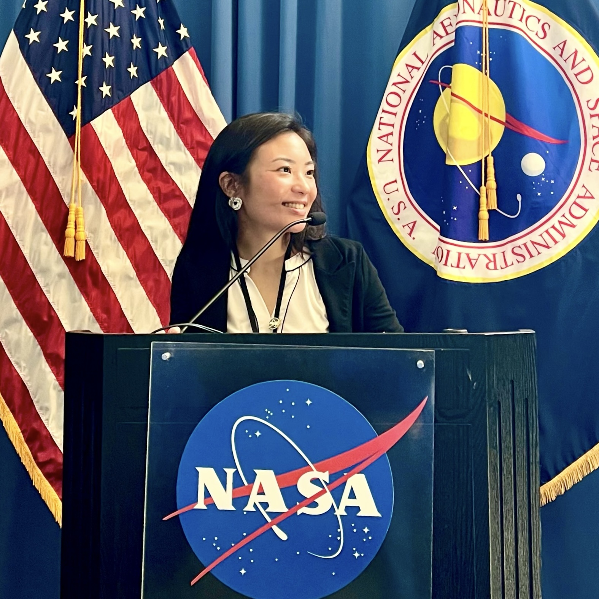

Ada Zhang
AI Scientist/Researcher • Data Scientist • Statistician • Machine Learning Engineer

About Me
I’m Ada, welcome to my personal website! Currently, I work at Sony, where I (in layman's terms) code and use math to solve cybersecurity problems. I also do research in the fields of statistics, AI, and machine learning (I’ve listed a few of my past works on the Publications tab). In my free time, I love to work out (specifically running and strength training), play music (I’m a classical violinist), do calligraphy (see the Other tab), and spend time with friends.
Why I Chose my Career
John Tukey (often regarded as the "Father of Data Science") once said, “The best thing about being a statistician is that you get to play in everyone's backyard.” This quote resonated deeply with me and was a major reason why I pursued statistics as a major, which naturally led me to a career in machine learning, AI, and data science. What I do is domain-agnostic, and I love getting to work in different fields.
Machine learning is a perfect blend of programming and statistics. In high school, AP Statistics was my favorite class. I enjoyed my coding classes in college and the logical problem-solving they required. My career is the perfect combination of these two subjects, bringing the best of both worlds together.
Additionally, the work I do aligns with my personality. I like organization, and any AI model needs data that has been organized to make accurate predictions. My friends tell me, "You're the most organized person I know." I like to make decisions based on empirical information, which is at the heart of what I do. Furthermore, I like details. Just as a scientist should validate their results, I naturally double-check everything, ensuring accuracy and reliability in my work.
It’s All in the Name
Ada is a very technical name for several reasons. Ada Lovelace was the world’s first computer scientist. There is a programming language called Ada, and it rhymes with "data." These connections to artificial intelligence are purely coincidental. When my parents named me, they had no idea I would go into a technical field.
Ada sounds like the Greek letter eta, η, which is the learning rate in the gradient descent algorithm. I LOVE to learn (as a child, I’d count down the days until school started). There is another, more advanced version of the vanilla gradient descent algorithm called Adaptive Gradient, or AdaGrad. Instead of using a fixed learning rate, the learning rate adjusts, much like people do in real life. I love how machine learning algorithms reflect human learning. There also exist AdaFactor, AdaDelta, AdaBoost, AdaNet, and others.